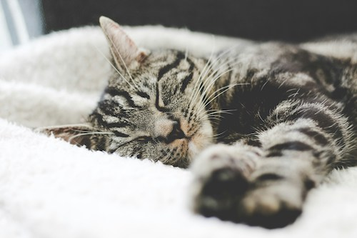

As someone who preferably likes peace and quiet I prefer cats instead of dogs so I could study with a quiet, snuggly buddy or binge watch a TV show with. I think that cats would be a nice companion to talk to while I'm feeling down or when I'm lonley. On the other hand, dogs are very energetic and always need your attention. In my overall opinion I'm not a huge fan of a dog jumping on me when it wants to play or I don't want it to lick my face. If you prefer dogs over cats because they are your special companion or some say "A dog is man's best friend", that is good and I think that everyone has their own personal opinions about everything.
